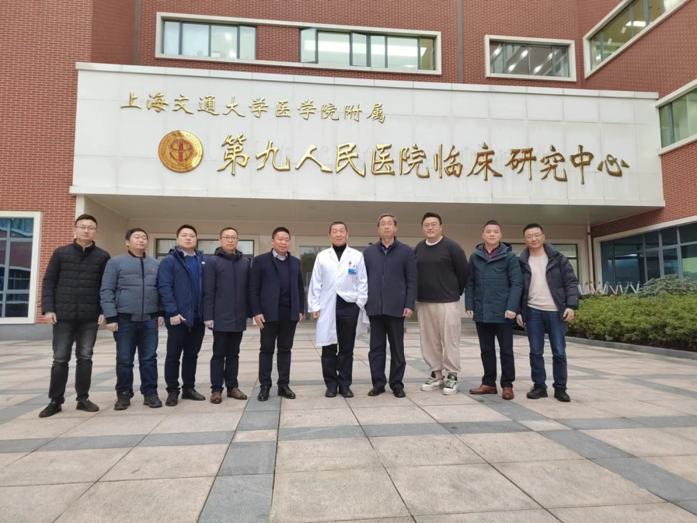
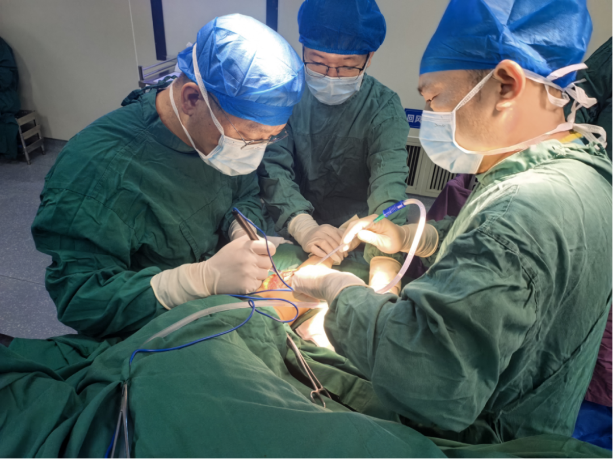
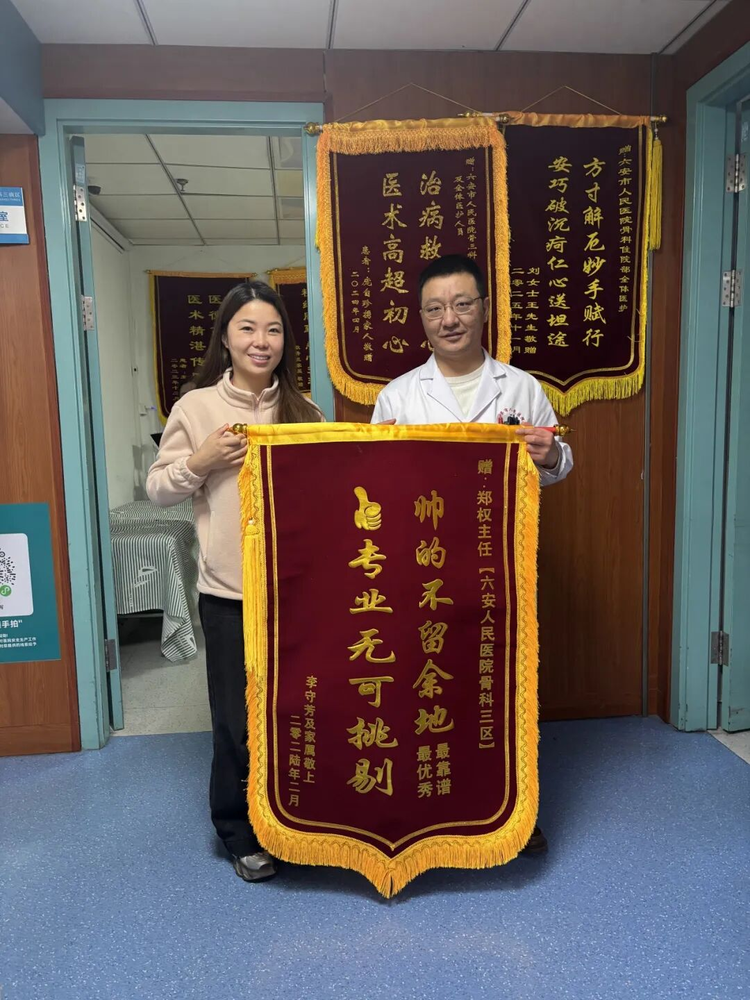

从黄浦江到大别山：电波特别企划EP1——接住的，不仅是技术

导语
从黄浦江到大别山，山水相隔的两座城市，因为一场持续发生的医疗对口合作，有了越来越多的交汇。
对口合作的背后是真实的、双向的人才流动。上海的专家走进六安，也有一批批六安的医生走进上海。
自2023年起，六安持续选派多批临床骨干与管理人才赴沪进修，在更大的医疗平台上寻找新可能。
郑权老师，正是这场互动的亲历者。2023年，他去到了上海交通大学医学院附属第九人民医院进修。他不仅把前沿的 3D 打印技术带回了六安，让大别山的患者在家门口就能做上高难度的手术，更将严谨极致的临床思维刻进了日常。
时间轴拉长，这也是一位基层青年医生扎根一线的蜕变史：从研究生时期赴沪科研的蛰伏，到规培时的青涩，再到如今面对复杂医患关系时的从容与仁心。
宏大的政策叙事之下，前沿医疗理念如何在大别山生根开花？本期专访，我们将跟随郑权的讲述，在政策的落笔处，寻找一位骨干医生的成长答案。
资料卡片

郑权，男，中共党员，医学博士，六安市人民医院骨科副主任，副主任医师，安徽省医学会骨科分会青年委员，安徽省医师协会骨质疏松与骨矿盐分会青年委员，安徽省医师协会ERAS及骨质疏松委员会委员，六安市科学技术协会委员，六安市骨科质控中心委员兼秘书；主持国家自然科学基金青年基金项目1项，安徽医科大学及皖南医学院校科研基金2项，参与国家级及省部级课题3项，发表论文10余篇，其中英文SCI论文6篇，申请获批实用新型专利2项。
点击下方收听播客音频
音频暂未加载，请稍后重试，或前往公众号收听。
带回来的，不只是3D打印技术

Q
主持人：您去上海进修的时候，学的具体是什么方向？到了上海以后，发现哪些情况和六安特别不一样？
A
郑权老师：在上海的进修时令我印象最深的首先是最新的“医工交叉融合”在上海的医疗实践中真实地走进了临床。每天都有许多工科工程师参与到我们的临床工作中，这在六安以前是从来没有出现过的。
另外让我感触很深的是，上海医生的知识储备非常充足，在临床诊疗和手术过程中，对细节的把控极其规范。比如，他们的上班和交班时间要求非常严格；在治疗过程中，也严格按照指南和临床规范来制定手术与治疗方案。
Q
主持人：回来之后，您的所学在诊疗或手术中得到了怎样的运用与实践？
A
郑权老师：在我赴沪进修之前的2022年，上海交通大学3D打印创新研究中心就和我们医院共建了“上海交通大学医学3D打印创新研究中心六安市人民医院分中心”，引进了一些工程师和设备，让我们初步接触到这项技术。
进修回来后，我们在骨肿瘤的3D打印定制型假体应用上做了很多突破。我们首次开展了我市首例“3D打印定制型人工肘关节置换手术”和首例“生物型定制3D打印骨盆假体”用于治疗骨盆恶性肿瘤的半骨盆置换手术。
对于这类级别高、风险大的手术，3D打印技术的引入让手术变得更加精确。术前的三维规划能有效降低手术风险。这项技术开展以后，我们在家门口为大别山地区的患者解决了这些高难度的医疗需求。
Q
主持人：除了技术，我也听过一个说法：“医生真正学到的往往不是一项技术，而是一种思维方式。”您从上海回来后，有没有感受到这种变化？有没有哪个人或细节对您影响特别大？
A
郑权老师：的确如此。真正用于临床的技术，往往不是通过一次进修就能完全掌握的，但我学到了很多受用终身的理念。
首先是MDT多学科诊疗的规范化流程。当时有一位23岁的湖南年轻患者，长了巨大的软骨瘤，骨盆占位，一直挤压到盆腔、腹腔甚至胸腔。膀胱、肠道和一些大血管都受到了严重压迫，手术风险极高。我亲自参与了这个患者的治疗全流程，看到了血管外科、泌尿外科、胸外科和普外科的通力合作。每个学科能力都很强，术前制定了详细的方案，术中配合默契，最终保证了手术成功。这种全院通力合作的能力和医院对特殊重大手术的支持，让我深感震撼。
然后是郝永强教授团队带来的影响。郝教授是国内顶尖的骨科专家，但他对患者非常和蔼严谨。作为主刀医生，他每次都亲自去跟患者做详细沟通，因此总能取得良好的沟通效果，患者家属也非常理解。在六安，医患沟通往往是由主治医生或一线医生完成，很少有大专家亲力亲为。郝教授这种做法让我感触很深：从他口中说出的话，分量更足，患者也更有安全感。
Q
主持人：如果把您的职业成长看成一条线，这次赴上海进修对您来说处在什么位置？
A
郑权老师：在六安当地医院10年的临床工作给我打下了坚实的基础，面对临床上常见的问题也有了一定的经验，正处职业生涯中发展的关键时期，而这次进修让我学到了新技术，拓宽了眼界，更新了理念，对我临床水平的跃升意义重大。
从实验室到病房，沉淀是最高效的成长

Q
主持人：从刚进医院的年轻医生，到如今能独当一面的副主任医师，哪些关键的选择塑造了现在的您？
A
郑权老师：这要从我研究生时期说起，我硕士是在安徽的一个普通大学读的学硕，期间面临一个很重要的一个选择：我的导师跟交大医学院戴尅戎院士的实验室有合作，每年可以派一个人过去做基础实验。当时过去学习条件比较辛苦，面临经济压力，且只有一年多时间。很多人觉得，不如留在本地医院多熟悉人脉、学点临床技术。但我最终选择了去上海。
现在看来，这个选择非常重要。那段经历培养了我循证推理的能力，让我明白基础研究和临床工作其实是一脉相承的。
后来到了2020年，医院成为安徽医科大学附属医院，开始高度重视科研，出台了很多新项目申报政策。得益于之前的科研基础，我成功申报了“国家自然科学基金青年项目”。这段经历让我懂得：医生要不断去尝试和学习，不要有抵触情绪。无论是基础研究还是临床技术，只有理论到实践全面提升，才能更好地帮助患者解决问题。
Q
主持人：与还是规培生时的自己相比，您觉得最大的不同是什么？
A
郑权老师：刚毕业规培时，年轻青涩，在医患沟通上走了不少弯路。随着技术和知识储备的增加，信心更足了，跟病人的沟通也变得更加顺畅，患者的认可度大大提高。
另一点是对临床工作认知的转变。学生时代，大家都恨不得立马天天上手术台开刀。但现在的我最大的感触是：早期的沉淀极其重要。 临床操作很多时候是熟练工种，靠重复就能掌握；但深厚的理论知识不是一天两天能补上的。如果当初能花更多时间做基础研究、学扎实理论，对我的提升会更大。当初在九院进修时，郝永强教授也常跟我们说：“科研做得好的人，临床绝对不会差。”
医患之间，理解也是一种疗愈

Q
主持人：医院是一个生与死交汇的地方。在您这么多年的临床工作中，有没有一些瞬间，让您感受到医生和患者之间那种特别温暖的连接？
A
郑权老师：其实，患者和医生是在同一条战线上的，我们共同的敌人是疾病。 最让我感到温暖的，就是患者的理解和支持。
前不久，我们有一位脊柱手术患者，术后出现了感染并发症。本来一周就能出院的手术，因为感染需要长时间治疗，期间经历了三次手术，患者吃了很多苦。遇到这种情况，医生其实压力非常大，我们原本很担心家属会有意见。
但是，患者和家属自始至终和我们站在一起。他们每天积极跟我们沟通，对治疗方案全力配合，从未把情绪发泄在医生身上，总是说我们大家一起努力做好。最终患者康复出院时，他的女儿还特意给我们送来了锦旗。在这种经历了巨大波折的情况下，他们依然心怀感恩，这让我非常感动。
都说医生是“有时去治愈，常常去帮助，总是去安慰”。当我们付出了关爱，患者感受到了并积极反馈给我们，这种医患间的双向奔赴，是非常温暖的。多一份理解、多一份信任，所有的困难基本都能克服。
成为一个优秀的医学家
Q
主持人：对于刚开始学习的医学生，您有什么想说的？
A
郑权老师：大家要注重全方位能力的培养，不仅是书本上的知识、考试的分数、发的文章，更重要的是沟通的技巧，以及如何将基础理论应用到实践中。知识学得好不代表在临床上如鱼得水，如何将学到的知识展现出来、运用出来，这对医学生的表达沟通能力等综合素质都有很高的要求。
最后，我想跟所有的医学后辈们说：不忘初心，牢记使命，努力成为一个优秀的医学家！
结语
正是有一群像郑权老师一样的“躬耕者”，让对口合作不再是宏观政策的概念，而是微观个体可以感知的医疗进步。我们从“接住”的一端，看见了沪六对口合作在六安本地继续生长的样子。也正是在这样的故事里，“造血”不再只是一个概念，而是真正沉淀为护佑大别山百姓安康的坚实屏障。
从黄浦江畔的潮鸣，到大别山深处的晨雾，跨越千里山水的，不仅是前沿的技术与理念，更是医者之间同频共振的仁心。在这场宏大的时代叙事里，郑权医生给出了属于自己的故事与回答。
关于博医
上海交通大学医学院“荣昶-博医”卓越医学生培养计划是上海交通大学医学院在上海荣昶公益基金会的支持下决定开展，具体由共青团上海交通大学医学院委员会组织实施的培养计划。该计划以践行有灵魂的卓越医学创新人才培养为理念，发挥上海交通大学医学院在医学教育及医疗卫生服务领域的综合优势，聚焦面向未来的卫生健康领导力，培养具有人文素养、创新思维、家国情怀、领袖气质、全球视野的高层次“医+X”卓越医学创新人才，担负起健康中国建设使命。
供稿丨博医计划五期学员 25级英五 张昕媛
排版丨博医计划五期学员 25级口五 梅家琳